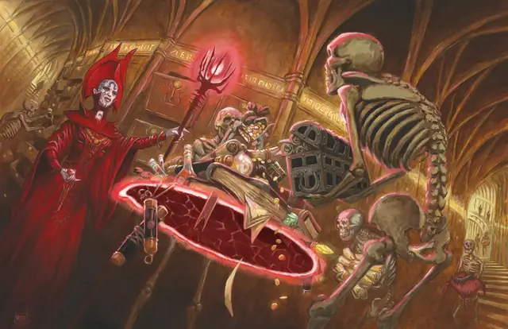

Парящий диск Тензера
Tenser’s Floating Disk
1 уровень, Призыв

Время сотворения Действие или Ритуал
Дистанция 30 футов
Компоненты В, С, М (капля ртути)
Длительность 1 час
Классы Волшебник
Это заклинание создает в видимом вами незанятом пространстве в пределах дистанции на ваш выбор круглый горизонтальный диск из чистой силы диаметром 3 фута и толщиной 1 дюйм (2,5 см), парящий в 3 футах над полом. Диск существует, пока действует заклинание, и может нести вес вплоть до 500 фунтов. Если на диск поместить больший вес, заклинание окончится, и всё, что было на диске, падает на пол.
Диск неподвижен, пока вы находитесь в пределах 20 футов от него. Если при вашем перемещении расстояние между вами превысит 20 футов, диск последует за вами так, чтобы оказаться в пределах 20 футов от вас. Он может перелетать по неровной поверхности, перемещаться по лестницам, склонам и аналогичным препятствиям, но не может преодолеть перепады по высоте в 10 футов и более. Например, диск не сможет перелететь над 10-футовой ямой, и не сможет из неё выбраться, если будет создан на её дне.
Если вы переместитесь так, что расстояние между вами превысит 100 футов (например, если диск из-за препятствия не может последовать за вами), заклинание оканчивается.